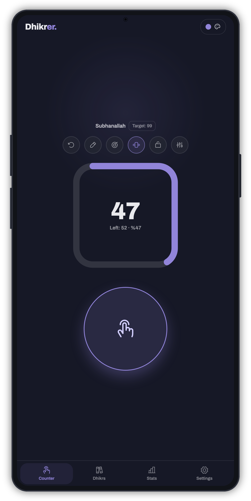
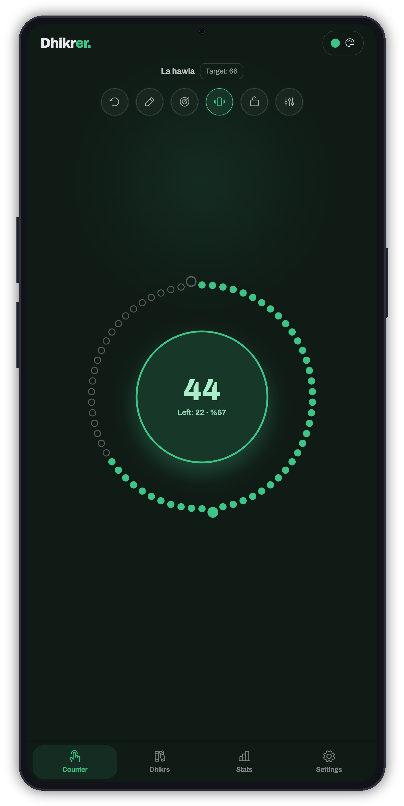
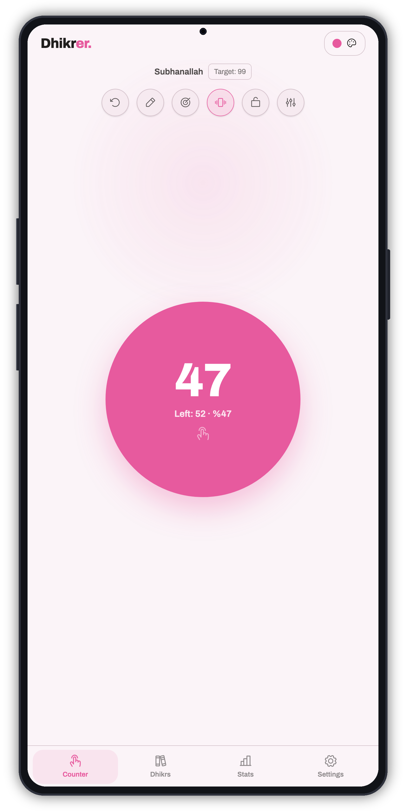
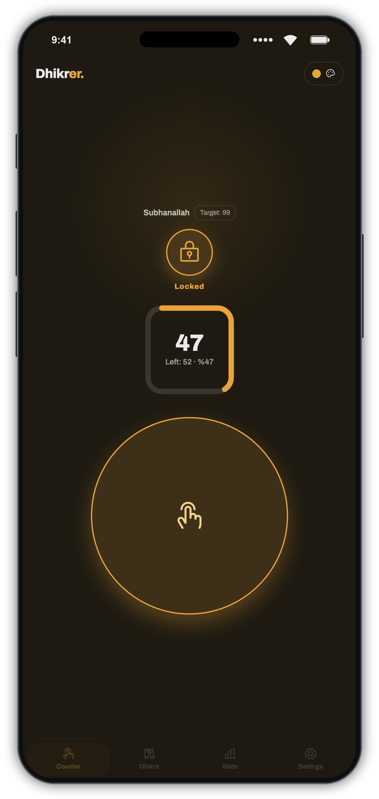
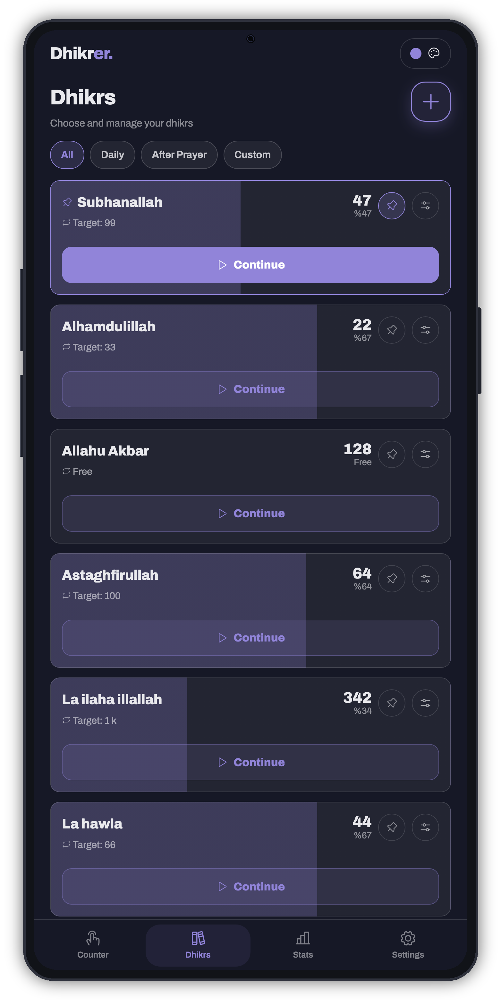
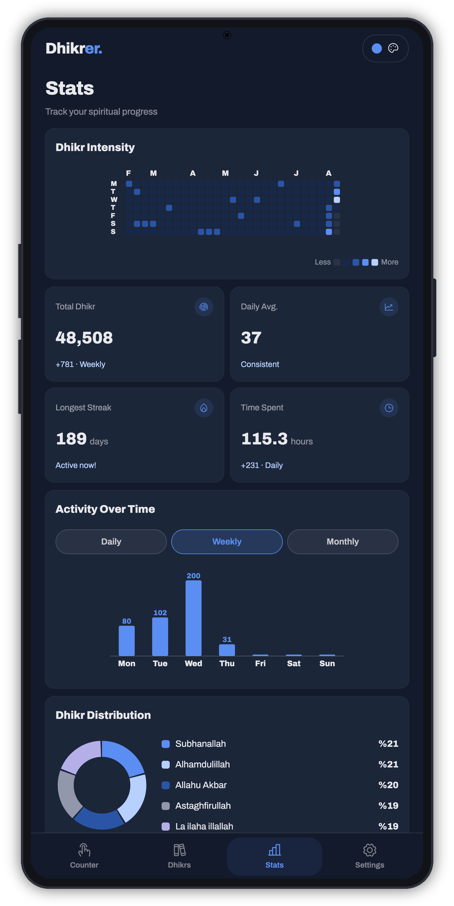
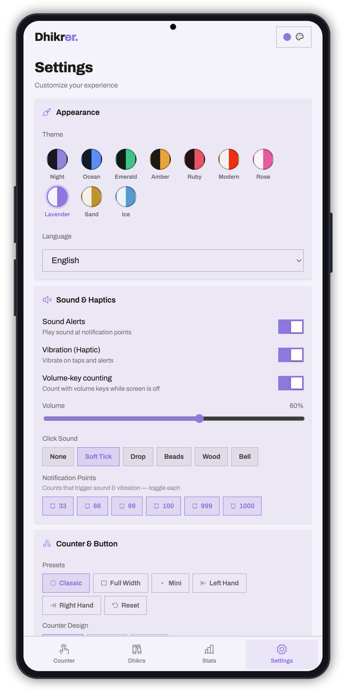

You focus on the dhikr, let Dhikrer handle the counting.
A simple, fast, distraction-free digital tasbih (dhikr counter).
Free, ad-free, offline, no subscriptions — everything stays on your device.
Dhikrer is built on subtraction. What we leave out is the point.
Fast where it counts, deep where it matters.
A big tap button, the physical volume keys (even with the screen off), or a resizable home-screen widget.
Classic ring, a giant Unified button, and a Tesbih bead-ring that fills as you count with 33 / 66 / 99 dividers.
Set 33 / 66 / 99 targets or free count. Haptics and sound at each milestone — every one individually toggleable.
Save unlimited dhikrs with per-dhikr sound & vibration. Pin, reorder, and swipe to delete.
A git-style intensity heatmap, streaks, daily / weekly / monthly trends, and a distribution donut — all on-device.
Multiple languages including Arabic with full right-to-left support, plus 10 themes and animation effects.
Every surface is calm, high-contrast, and out of your way while you count.
A large ring shows your count from 0–999 with a thousands indicator. Count up or down, and it continues exactly where you left off.

A prayer-bead ring that fills as you count, with divider beads at 33, 66 and 99 — the closest thing to a physical tasbih.

One giant button fills the screen — the whole surface is the counter. Perfect for eyes-closed, one-thumb counting.

Lock everything but the counter. Slip the phone in your pocket and keep counting with the volume keys — no accidental taps, no accidental exits.

Your personal library of dhikrs. Add as many as you like, give each its own sound and vibration, then pin, reorder, and swipe to remove.

See your rhythm at a glance. A git-style heatmap, streaks, and daily / weekly / monthly trends — drawn entirely from your real counting history, on-device.

Make it yours. 10 dark & light themes, counter shapes, animation effects, milestone toggles, reminders, and language — all in one calm panel.

Five deep-dark and five soft-light themes — tap to cycle them right inside the app.
From your first count to advanced customization — tap any topic to expand it.
Free, ad-free, and yours. Install Dhikrer and keep your dhikr close.